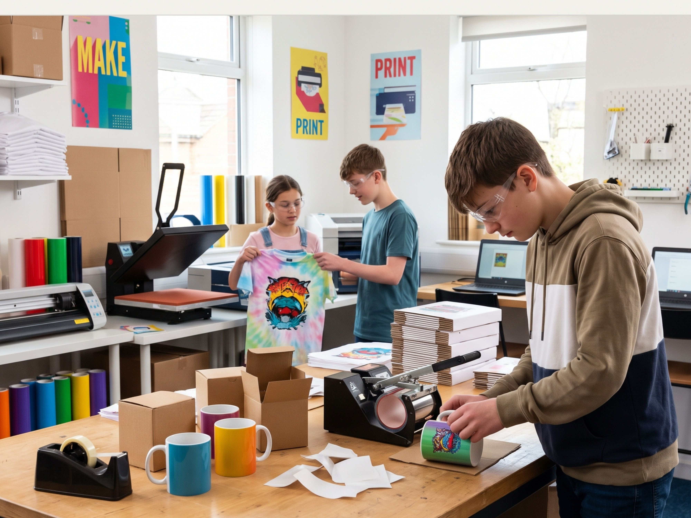

Maker Products & Social Enterprise
Hands-on craftsmanship with genuine purpose. Exploring practical digital layouts, heat transfer printmaking, and gentle tactile arts to create meaningful, tangible items.
Real-World Craft with Adult Backstops
At Workshop House, creative learning connects with tangible, real-world utility. Young people develop skills across graphic design, sublimation printmaking, and tactile artisan crafts, from ceramic mugs and printed textiles to botanical clay and papercraft pieces.
Through our in-house enterprise brand, Dotty Moo, learners have the opportunity to explore genuine product lifecycles, packaging, and dispatch in a low-demand, unpressured environment. Every customer order is fully underwritten by adult staff, ensuring young people work strictly for personal development and accredited learning, never production targets.

Personalised Keepsakes
Bespoke gifts, custom-printed ceramic mugs, tote bags, and celebration items produced with commercial-grade dye sublimation and precision heat pressing.
Gentle Tactile Wares
Sensory-grounded artisan crafts, including botanical clay dishes, decorative paper craft, origami notebooks, and textured fiber pieces made at a gentle pace.
100% Asset-Locked Social Value
Every penny of trading surplus generated through product sales remains strictly locked within our Community Interest Company to fund learner equipment and community bursary desks.
The Social Enterprise Model
Our maker activities exist to rebuild confidence, personal agency, and accredited vocational skills in a calm, low-arousal setting. Retail operations and store dispatches are carried out by adult staff outside teaching hours, ensuring a safe, stress-free educational sanctuary for every young person.